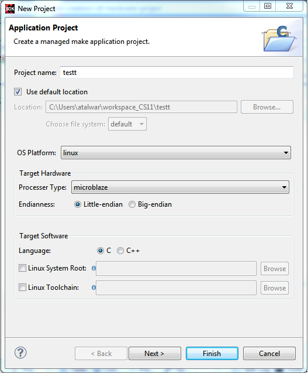

You can create a C or C++ Linux application project by using New Application Project wizard.
To create a project:
Click File > New > Application Project. The New Application Project dialog box appears.
Note: This is equivalent to clicking on File > New > Project to open the New Project wizard, selecting Xilinx > Application Project, and clicking Next.

Type a project name into the Project Name field.
Select the location for the project. You can use the default location as displayed in the
Location field by leaving the Use default location check box
selected. Otherwise, click the check box and type or browse to the directory
location.
The OS Platform allows you to select which operating system you will be
writing code for. Select Linux.
Note: This selection alters what templates you
view in the next screen and what supporting code is provided in your
project.
From the Processor drop-down list, select the processor for which you want to build the
application. All supported processor types for Linux applications are
listed.
Select an Endianness option: Little endian or Big-endian.
Note: This option is enabled only upon selection of the Microblaze processor, from the
Processor drop-down list.
Select your preferred language: Cor C++.
Optionally, select Linux System Root to specify the Linux sysroot path
and select Linux Toolchain to specify the Linux toolchain path.
Click Next to advance to the Templates screen.
SDK provides useful sample applications listed in Templates dialog box that you can use
to create your project. The Description box displays a brief description
of the selected sample application. When you use a sample application for your
project, SDK creates the required source and header files and linker
script.
Select the desired template. If you want to create a blank project, select the Empty
Application. You can then add C files to the project, after the project
is created.
Click Finish to create your linux application project.